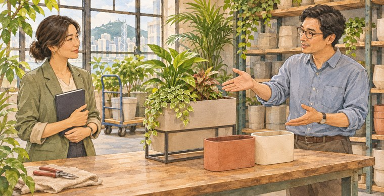

STR-22 · 香港 · 虛構服務企業 · 15–20分鐘 · 資源為本的優勢 · 可模仿性 · 夥伴協作常規
產品被仿製，優勢也被複製？

客戶看得見的產品，以及背後的營運系統
策略研究把客戶看得見的產品，與支撐產品交付的資源和關係區分開來。有些能力靠反覆合作逐步形成，並非一次採購就能取得。這可能令能力較難複製，但不代表它會長久維持，或自然帶來利潤。
這個虛構個案探討產品被仿製後應投資於甚麼。個案並非指控任何真實競爭對手，也不涉及知識產權糾紛，更不是建議限制夥伴為其他客戶工作的自由。
課堂決定
虛構的課堂情境。 你在香港經營植物擺設租賃服務，為辦公室和活動場地提供裝飾用的植物擺設。一家競爭對手現已合法推出一款外觀與你現有的模組化花盆相近的產品。雙方的基本產品品質和一般租賃服務質素相若。這個情景不涉及侵權或保密糾紛。
你有 HK$60,000 可在本季度酌情用於開發，但管理團隊只能推行一項計劃。A 是開發可互換的全新彩色花盆外套、製作樣品，並測試客戶反應。B 是加強你與獨立送貨及擺設護理夥伴共同建立的服務常規：議定場地進出安排、核對客戶要求的擺設、確認由誰處理例外情況，並共同完成交接。B 的開支用於聯合演練、共用交接紀錄和後備人手安排。兩項原方案各需40,000港元；未用款項不作承諾。
目標是令日後的服務更具吸引力，而不是補救現有工作中的安全問題或未履行的承諾。無論怎樣選擇，現有合約、正常的夥伴費用，以及必要的安全、私隱和場地進出安排，均有獨立撥款。B 會先測試一項需要協作、可在短時間通知下更換擺設的新服務，才正式推出；目前並未向任何客戶承諾提供這項服務。夥伴仍然獨立，可自由為其他客戶工作。
最近與客戶交談時，有人提到希望擺設外觀有新鮮感，也希望更換擺設時少打幾通協調電話。這些對話既沒有提供客戶付費意願的估算，也沒有提供銷售預測。目前仍無證據顯示擬議的新設計可以多快被仿製，或人員變動後，服務常規能否繼續穩定運作。你也可以暫緩兩項計劃，先蒐集更有說服力的證據。
兩項虛構開發方案| 方案 | 一次性預算 | 開發內容 |
|---|
| A · 可見的產品特色 | HK$40,000 | 擺設用花盆的全新可互換彩色外套 |
| B · 夥伴協作常規 | HK$40,000 | 共同交接、例外情況演練和後備人手安排 |
你的決定本季度你會撥款開發可見的新設計，還是推行夥伴協作常規計劃？說明客戶可能重視甚麼、競爭對手能複製甚麼，以及哪些證據足以支持你的選擇。
第二輪 · 多了一項資料
在承諾動用任何開發資金前，你收到三項新消息。 在這個假設情景下，供應商的評估確認，競爭對手可以使用相同的花盆外套製造設備，並能在看到新設計後四星期內仿製。這只是對能力的評估，並不證明對手會這樣做、仿製毋須成本，或客戶會流失。
在有人監督的演練中，兩支團隊處理十宗按預設情節編排、並非來自客戶的更換擺設要求。原有夥伴團隊有九宗按時完成完整交接；新組成而具備適當資格的團隊，使用同款花盆和同一份書面核對清單，有六宗達標。成功是指在預約時段內完成議定的擺設和交接，而且毋須再打本可避免的協調電話。所有安全及必要的場地進出檢查均予保留。新組成的團隊並非競爭對手。這次小規模的非隨機演練，既不能分辨任何單一常規的影響，也不能預測日後的成功率。
原有夥伴能說出彼此共同的工作習慣，也知道計劃有變時要聯絡誰，卻無法分辨經驗、信任、核對清單和個人判斷各自發揮多大作用。競爭對手目前並未與這些夥伴共同演練出這套常規，但可以另建一套系統。
一名主要夥伴現已決定下季度不參與新計劃。現有合約仍有人負責履行。已有替補人選，但安排替補人員熟習工作及演練的額外報價為 HK$12,000 ，這筆費用加到 B 後，整項開發成本為52,000港元。修訂報價涵蓋同樣的測試範圍，包括對替補團隊的檢查，但不保證能達到原有團隊的表現。A 仍需40,000港元。兩項方案仍在60,000港元的預算內。
你的決定得知仿製和夥伴方面的新消息後，你會選擇40,000港元的 A、52,000港元的修訂版 B，還是暫緩兩項方案？區分「能力較難複製」的證據與「優勢能夠持續」的證明，並訂出一項測試，在向客戶作出新承諾前進行。
區分產出與能力
花盆的外形或外套是看得見的產出，製造它們的設備則是投入。要每次都做好交接，有賴人員察覺問題、聯絡合適的夥伴，並協同行動。競爭對手即使擁有同款花盆或買到同一部機器，也不等於能立即複製整套服務。
同樣，較難被看見不代表有價值。這套常規必須解決客戶在意的問題，而成本也須是企業和夥伴可以持續負擔的。即使容易仿製，一項特色仍可能值得開發，因為它能吸引客戶，或令產品不遜於對手。不能單憑容易仿製，就放棄有用的設計。
兩種不同的模仿障礙
因果模糊性 指資源與表現之間的因果關係不清楚。在這個個案中，連團隊也說不出是哪些因素結合起來，造成演練表現的差異。單憑完成宗數不能確定成因，而把文件藏起來也不等於存在因果模糊性。
社會複雜性 涉及在共同工作中形成的關係和協作習慣。即使有人明白彼此熟悉有助交接，也未必明天就能花錢買到同等的合作關係。兩種機制可以重疊，卻並不相同。個案提供了值得探究模仿難度的理由，並未證明這項優勢無法複製。
演練能說明甚麼，又不能說明甚麼
在十宗預設要求中，原有團隊在毋須再打協調電話的情況下，比新團隊多完成三宗：九宗對六宗。這只是描述本次演練的差異，並非處理措施的因果效應、機率預測或利潤比較。團隊組成、成員彼此熟悉的程度和其他條件都可能有影響。必須測試替補團隊，不能假定它會延續以往的表現。
較難複製的常規，在自己的合作網絡內也可能較難轉移。把有用的交接資料記下來，並培訓後備人員，但不要假定一份核對清單涵蓋所有技能。故意令員工摸不着頭腦會妨礙學習；因果不明是要理解的限制，不是管理目標。
重新計算維持這項能力的成本
修訂版 B 的成本為40,000港元 + 12,000港元 = HK$52,000，餘下8,000港元。選 A 則餘下20,000港元。因此，選 B 本季度須多承諾動用12,000港元。兩項方案都負擔得起，但負擔得起並不能說明哪一項能創造較多價值。
新增的上手培訓費用反映維持能力的負擔，並非一道永久保護東主的屏障。夥伴退出，合作關係可能轉弱；夥伴也有自己的成本和其他選擇。應評估能否持續有人接手、公平報酬、夥伴是否同意，以及交接安排是否可行。不要假定企業擁有夥伴的知識，或有權阻止夥伴離開。
有條件的建議
如果你打算向客戶承諾減少協調工夫，而管理層也接受多花錢測試這項能力，那麼，傾向修訂版 B 是有理據的。在出售新服務前，應讓替補團隊用一批新的、有代表性的要求進行演練，訂明完成準則，並記錄再次致電的情況、延誤和完整的服務交付成本。通過演練後，應進行小規模客戶試行，如實說明服務內容，並蒐集服務對客戶有價值的證據。規模這麼小的演練，不能證明能力可以長久維持。
若管理層優先考慮外觀吸引力，並希望迅速測試客戶反應，同時接受設計短期內便可能被仿製，選 A 也有理據。若兩項方案都沒有足夠證據支持開發開支，便暫緩兩者。個案沒有提供收入或利潤率預測，因此無法判定哪個方案在財務上必然勝出。
無論怎樣選擇，都要留意其他方案。客戶可能用不同方式滿足同一需要，競爭對手也可能建立自己的有效常規。要維持優勢，不能只靠一次好表現，或一項被稱為「稀有」的資源。
教師說明
預留15–20分鐘：三分鐘作初步選擇，四分鐘討論新消息，五分鐘區分可見產出與服務能力，再用三至八分鐘提出有條件的建議。學生說明自己認為甚麼能創造價值之後，才公布新消息。要求學生指出還欠缺甚麼證據，不要只說「關係就是我們的護城河」之類的口號。
預算計算刻意設得簡單；真正要判斷的是可模仿性、價值和維持成本。不要把十宗中完成九宗，當成日後必有90%的成功率。不要說競爭對手有六項測試不合格：它根本沒有參加演練。驗證替補團隊是修訂版 B 的一部分，並非免費附送。即使兩項方案都暫緩，對現有客戶的承諾和強制標準仍然不受影響。
STR-06 權衡是否與競爭對手共用一套實體設備；STR-19 評估把能力轉移到新業務；ENT-06 探討發現一項看得見的機制後，如何研究可獲得的法律保障。本個案則由一家現有企業比較應對仿製的不同投資方案，區分產出與共同建立的常規，並看清維持常規的成本。個案並不要求提出法律申請、訂立獨家安排或進行反競爭協調。
第二輪
在承諾動用任何開發資金前，你收到三項新消息。 在這個假設情景下，供應商的評估確認，競爭對手可以使用相同的花盆外套製造設備，並能在看到新設計後四星期內仿製。這只是對能力的評估，並不證明對手會這樣做、仿製毋須成本，或客戶會流失。
在有人監督的演練中，兩支團隊處理十宗按預設情節編排、並非來自客戶的更換擺設要求。原有夥伴團隊有九宗按時完成完整交接；新組成而具備適當資格的團隊，使用同款花盆和同一份書面核對清單，有六宗達標。成功是指在預約時段內完成議定的擺設和交接，而且毋須再打本可避免的協調電話。所有安全及必要的場地進出檢查均予保留。新組成的團隊並非競爭對手。這次小規模的非隨機演練，既不能分辨任何單一常規的影響，也不能預測日後的成功率。
原有夥伴能說出彼此共同的工作習慣，也知道計劃有變時要聯絡誰，卻無法分辨經驗、信任、核對清單和個人判斷各自發揮多大作用。競爭對手目前並未與這些夥伴共同演練出這套常規，但可以另建一套系統。
一名主要夥伴現已決定下季度不參與新計劃。現有合約仍有人負責履行。已有替補人選，但安排替補人員熟習工作及演練的額外報價為 HK$12,000 ，這筆費用加到 B 後，整項開發成本為52,000港元。修訂報價涵蓋同樣的測試範圍，包括對替補團隊的檢查，但不保證能達到原有團隊的表現。A 仍需40,000港元。兩項方案仍在60,000港元的預算內。
你的決定得知仿製和夥伴方面的新消息後，你會選擇40,000港元的 A、52,000港元的修訂版 B，還是暫緩兩項方案？區分「能力較難複製」的證據與「優勢能夠持續」的證明，並訂出一項測試，在向客戶作出新承諾前進行。